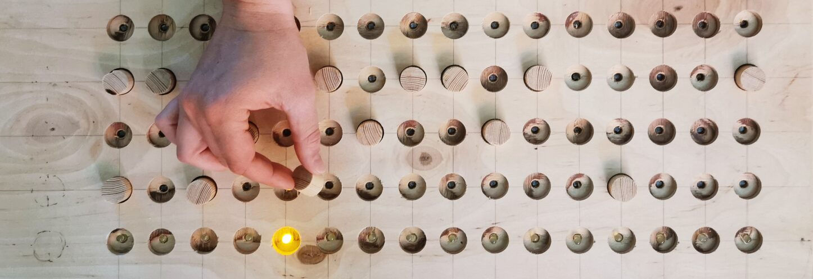
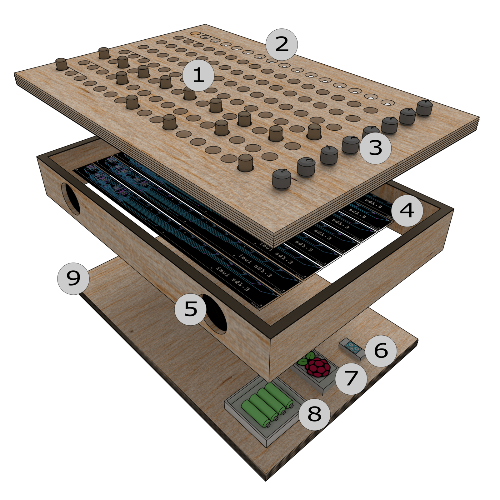

LoopBlocks: Design and Preliminary Evaluation of an Accessible Tangible Musical Step Sequencer


LoopBlocks - view from above
Abstract
This paper presents the design and preliminary evaluation of an Accessible Digital Musical Instrument (ADMI) in the form of a tangible wooden step sequencer that uses photoresistors and wooden blocks to trigger musical events. Furthermore, the paper presents a short overview of design criteria for ADMIs based on literature and first insights of an ongoing qualitative interview study with German Special Educational Needs (SEN) teachers conducted by the first author. The preliminary evaluation is realized by a reflection on the mentioned criteria. The instrument was designed as a starting point for a participatory design process in music education settings. The software is programmed in Pure Data and running on a Raspberry Pi computer that fits inside the body of the instrument. While most similar developments focus on professional performance and complex interactions, LoopBlocks focuses on accessibility and Special Educational Needs settings. The main goal is to reduce the cognitive load needed to play music by providing a clear and constrained interaction, thus reducing intellectual and technical barriers to active music making.
Author Keywords
Accessible Digital Musical Instruments, Tangible Interaction, Step Sequencer, Open Source, Special Education, Pure Data
CCS Concepts
•Human-centered computing → Accessibility; •Applied computing → Interactive learning environments; Sound and music computing;
Background
Recent advances in music technology and the increasing availability of low-cost sensors, micro-controllers and computers have facilitated the development of ADMIs and led to a gain in research interest and publications [1][2][3]. Digital musical instruments can provide access to active music making to a broader user group including people with disabilities1 by eliminating physical and/or intellectual barriers people might experience using traditional musical instruments. At the same time, new kinds of barriers might occur in the technical domain.
Most current ADMIs focus on physical barriers and target single users [1]. In contrast, LoopBlocks focuses on intellectual barriers. Since physical barriers are, up to a certain degree, obvious from the outside, intellectual barriers tend to withdraw themselves from the observer, underlining the importance of the participatory aspect of the planned iteration process. Nevertheless, we also want to address other barriers as much as possible during the evaluation process and generally, our goal is to provide access to active music making to a broader audience without the assumption of special musical training.
In Germany music education research focuses mainly on the use of touchscreen-based interfaces like the iPad to create ADMIs [4]. Tangible and embodied interfaces in particular, have a high potential to facilitate accessibility. In contrast to (touch-)screen-controlled, software-based instruments, the use of tangible interfaces implies several advantages [5]. In a professional context they are mostly used to create more complex interaction possibilities and to provide a better connection to the audience. In our context the direct manipulation of physical objects most importantly is supposed to facilitate the development of embodied interaction [6][7] and, following the cognitive distribution theory [8], the reduction of cognitive load by allowing the control of musical parameters separately. In combination with the inscription of musical knowledge [9], the use of a loop process might reduce the stress a traditional instrument creates, because the user does not have to perform exactly in time and the user is ableto explore the instrument one step at a time.
With LoopBlocks we present a first prototype as a starting point for an iterative participatory design process that will be conducted in a SEN school for children with intellectual disabilities. While common HCI-techniques like empathy-building may lead to the assumption that the actual experience of users with disabilities could be replaced by the researchers own experience, Bennett [10] emphasizes the importance of firsthand experiences that should be shared during the design process. That is why the presented design is explicitly open and will be adapted significantly during the process based on the preferred sounds, effects or interactions the children have as well as the requirements of the school setting. Since, especially in Germany, there exists only little research on the use of ADMIs in SEN school settings, LoopBlocks was designed based on criteria from international literature as well as first insights from an ongoing qualitative interview study with music teachers of German SEN schools conducted by the first author. The goal is to create several complementary instruments during the participatory part of the design process that provide low-threshold access to active music making and that can be synchronized using wireless communication and played in group settings. Due to the current restrictions based on the pandemic, we have had to postpone the actual user-testing. Nevertheless, we created a working prototype that was preliminarily evaluated reflecting upon the criteria mentioned above and comparing our design to similar instruments.
Related Work
Existing ADMIs address specific abilities of particular user groups by implementing a wide range of different approaches, including touchless sensor instruments like the Soundbeam2, video-based instruments like the MotionComposer [11], breath-sensor-based instruments like the MagicFlute3, light-sensor-based Instruments like SnoeSky [12] and tangible instruments like the Skoog4. Many ADMIs also provide complex interactive environments where users control sonic or musical events, like for example SonicDive [12] or Blobmusic [13].
Existing tangible Sequencers, like the Tquencer [14] or Reactable [15] mostly focus on complex interaction possibilities and target professional users. Commercial products like the Korg SQ-1 also tend to be highly complex and presuppose a deeper understanding of their technical functioning.
The most similar developments to our design are the Beat Bearing [16] that uses ballbearings on a grid for interaction, the GRIDI5 that uses rubber balls on a grid and the DrumTop [17] that uses everyday objects as sound source. Other tangible sequencers work with camera settings, like the Bubblegum Sequencer [18] or use more creative ways to create linear sequences, but specifically address little children like the Marble Track Music Sequencers for children [19].
Design Criteria
Regarding digital musical instruments (DMIs) in general, several design and evaluation approaches have been proposed [20][21], while the field seems to lack a formal framework that is broadly accepted [1]. Furthermore, these approaches primarily address professional contexts.
An important criterion for the creation of ADMIs is to design an interaction that lets the user experience a causal relationship between an action and sound production. In traditional instruments this relationship occurs automatically due to the instrument’s physical nature. With the decoupling of the input device (e.g. sensors) and the sound production (e.g. computers, speakers) in DMIs, a clear relationship between input and output must be specifically designed. The following criteria can influence the perception of a causal relationship:
Mapping between input and output [22],
(Multimodal) feedback [22],
Constrained and understandable affordances [2],
Adapting to experience by using cultural and embodied metaphors [23][24]
Since the SEN school system in Germany has a distinct structure and little is known about the requirements as well as the actual use of ADMIs in those settings, the first author is conducting an ongoing qualitative interview study with teachers from different SEN-schools6. All interviewees confirm the assumption that, apart from the use of iPads by some teachers, ADMIs are rarely used in German SEN schools, mostly because they are not known or too expensive. iPads are used for their versatility and for the motivation on the side of the children. Described as problematic aspects of iPads are the small interaction surface, the lack of haptic feedback and ergonomic aspects that were experienced as barriers for some children. One interviewee experienced that children refused to use iPads because they were not perceived as a ‘real instrument’. The most important criteria mentioned for ADMIs in German SEN settings are the following:
low financial costs,
importance of different interaction design approaches to address different abilities,
ease of use: fast installation and functioning without the need of adjustments,
educational possibilities,
robustness (one suggestion was wood as a material),
low weight and space-saving form,
interesting sound qualities that work in single-user mode as well as in group settings (together with analog instruments),
possibility of creative manipulation of sounds,
adopting to the listening experience of the children (popular music like Hip-Hop or DJ-Style sample based interaction),
available connection to external amplification for use in live settings,
aspects of hygiene.
Ward et al. [25] furthermore describe 18 design considerations specifically addressing SEN settings. Besides the already mentioned criteria, they stress the importance of:
form and material that should be inspiring,
adaptability,
standalone and wireless functioning,
educational possibilities,
an iterative and participatory design process.
Hard- and Software Design


LoopBlocks - schematic view
The instrument7 consists of a wooden frame (see figure 1(9)) with several PCBs (4), LEDs (2), an Arduino Nano (6), a Raspberry Pi computer (7), built-in speakers (5)8, controllers/potentiometer (3) and a power-bank (8). The interaction occurs by placing wooden blocks into an array of pre-configured holes (1).
The interaction surface has a dimension of 40x60cm. We chose wood, because it can easily be crafted, because of the antibacterial characteristic wood provides making it safe to use with children and because of the environmental aspect of wood being a renewable resource. On the surface are round holes of two centimeters in diameter drilled with a standard hand drilling machine. The holes are arranged in 8 rows consisting of 16 steps. The first row contains 16 LEDs indicating the current step. The other rows contain photoresistors to detect if a wood block has been inserted corresponding to the amount of light. To reduce production complexity, we created PCBs that can be mounted on the back of the surface by soldering the photoresistors and LEDs. The PCBs can be connected with 6 Pin JST-Connectors and arranged freely to create different layouts. To read the data from the 112 photoresistors shift registers (74HC165 IC chips) are daisy chained in combination with an Arduino Nano using the code and circuit described by Alexandros Drymonitis [26]. The pull-down resistor values of 400k were determined by trial and error. The LEDs are controlled with a 74HC595 IC chip. The Arduino communicates via serial port with a Raspberry Pi computer that is running a Pure Data Patch containing the sound production. Arduino, Raspberry Pi and Pure Data were chosen due to their open source availability and relatively low financial costs. The Raspberry Pi also provides wireless communication possibilities that will be beneficial later during the project. The current iteration still lacks the built-in speakers, potentiometer that could be used as loudness/effects/tempo control, the power bank and an on/off switch, because we want to stay flexible while evaluating the basic interaction process.
The current version of the Pure Data patch uses frequency modulation synthesis for sound production, simulating different drum sounds like bass-drum, snare-drum, open and closed hi-hat. Alternatively, the use of samples is possible. To provide musical background for exploration, accompanying loops are available in different musical genres. Furthermore, the patch includes different effects like stutter, scratch, delay or a random function. Those are meant to be tested with different sensors like buttons, distance sensors or touch sliders during the actual user testing and implemented in participation with the children.
Preliminary Evaluation
Due to the actual restrictions, formal user testing had to be postponed. The actual design and evaluation is meant to be regarded as a first artifact that will be functioning as a starting point in a participatory user study. One single design cannot suffice all mentioned design criteria entirely, especially because one criteria that was mentioned is the need of a variety of different instruments that embody different interaction approaches. So, LoopBlocks does not claim to be superior to other ADMIs but to offer a distinct design approach and address a distinct set of criteria. In the following part, we will reflect upon the mentioned criteria and then compare our design to similar developments. In first informal testing sessions conducted by ourselves we found that 7 rows for interaction might be overwhelming, especially with accessibility in mind. In addition, we came across some problems in functionality when the illumination was very bright (sunlight). This may be due to the fact that the wooden blocks we currently use do not block the light entirely. Since the high resistor values are a compromise and different values imply different latency, there is still room for optimization. Also, it might be a good idea to use more visual cues structuring the 16 steps and to design a higher contrast between the wood blocks and the holes. But this has to be validated during the user-testing, since it might be restricting the exploration process too much.
To fulfill the design criteria for facilitating the experience of a causal relationship between action and sound, the linear loop approach corresponds to standards in ‘western’ culture like reading or movie-players with the position of wooden blocks corresponding to a musical event in time (x-axis) and a musical characteristic like sound or pitch (y-axis). Regardless, other designs should be considered during the user testing, like for example circular arrangements. The affordances are kept simple using a one-to-one mapping and a clear grid with an inscribed time signature of 4/4 where the wooden blocks can be placed in a sixteenth note grid. Placing wooden blocks is also a very common interaction in toys for children (peg games). Besides the haptic feedback of the instrument itself and the auditory feedback of the musical events, we used LEDs that light up corresponding to the actual step in time as a visual feedback. In combination with the physical constraints this should help the user to understand the functionality without further explanation.
To make the instrument robust, easy to adapt and to keep the financial costs low, we restricted the hard- and software to openly available systems and chose wood as the basic material. The advantage of the wooden design lies in the possibility to involve children in the design and building process9. Regarding the planned additional ADMIs, the form of a closed box provides the advantage of multiple instruments being easily stored and stacked. Furthermore, our design is planned to work as a standalone instrument to encourage interaction with the instrument in a heideggerian ready-to-hand manner and thus to facilitate the embodiment of the interaction. The instrument is designed to work without the need of any adjustments by pressing one button. The planned availability of different effects is meant to enable the user to creatively manipulate the sound while at the same time staying in time to facilitate an inspiring and motivating outcome. The available background loops are supposed to adapt to the childrens’ listening experience. They are meant as a proposal and will be replaced during user testing according to the childrens’ interests.
Regarding the educational aspects of the instrument, the possibilities range from the experience of basic musical principles such as note pitch, melody making, rhythm or musical structure while using the soft- and hardware configuration as is provided in our design to the teaching of a variety of musical concepts dependent on the individual adaptions. For example a user might create a drum-pattern and then change different parameters like tempo, the background loops or apply different effects to experience the same pattern in a variety of musical contexts. LoopBlocks can be used in single user settings and provide a multilayer musical outcome or be used in group settings to provide a rhythmical or harmonic function. The arrangement of the wooden blocks can be regarded as a form of graphical notation as well as a pre-stage of traditional notation10. Regarding the teachers, the sound production using Pure Data is also designed to be easily accustomed at different levels and the open source soft- and hardware provides accessibility to other researchers who may want to test or adapt the instrument for other settings.
Similar developments like Beat Bearing [16] or Bubblegum Sequencer [18] are designed as interfaces that do not work in standalone mode. GRIDI furthermore is a rather huge midi-interface designed for events or museums that seems too large to be used in everyday SEN school settings. In comparison, the advantages of LoopsBlocks lie in its manageable size and standalone functioning, with a speaker included and without any adjustments needed to start making music. DrumTop and Marble Track Music Sequencers for children [19] follow a more experimental approach to step-sequencing and thus offer different musical outcomes and interaction possibilities than LoopBlocks. Especially DrumTop probably has some advantages concerning the aspect of causal relationship by using everyday objects as sound source. In comparison, LoopBlocks focuses on loop based (popular) music enabling children to make music that we hope corresponds to their listening experience and thus may provide an engaging and motivating musical outcome. The predetermined grid of LoopBlocks limits the rhythmical possibilities significantly, but at the same time enables users to try out different positions in time, step-by-step and get a direct feedback on how their choices sound, while staying in a familiar musical context.
Conclusion and future work
As already mentioned, LoopBlocks is designed as the starting point of a participatory design study with the goal of developing several ADMIs for SEN school settings. Our first prototype is meant to be used during user testing in a SEN school focused on children with intellectual disabilities to offer a broad range of different musical possibilities (e.g. effects) to the children while at the same time providing an easy to use interface that provides motivating musical results without the need of prior musical training.
Besides the passive inclusion of the childrens’ interests incorporating the insights from literature and the qualitative interviews, in future iterations as well as in the ideation and development of complementary instruments the children are meant to take an active role in the design process. The particular needs of the future users with intellectual disabilities cannot be addressed sufficiently without knowing the individual children and their abilities and thus will be the focus of the evaluation during the user study. This user study will be conducted in a special educational needs school focused on cognitive disabilities with small groups (of different ages) consisting of approximately five children and their music teacher or in single settings. As Falkenberg et al. [27] emphasize, a precise coordination with the teacher is a prerequisite for a co-design process with children in a school. For our target group in particular, the individual methods and the exact process must also be individually adapted to the needs and abilities of the individual students [28]. Therefore, we refrain from expressing a detailed plan at this point.
During user testing we will focus on the following questions, with our hypothesis being that the clear, constrained and haptic interaction design offers access to active music making to children with different (dis-)abilities:
• How does the ADMI fit the children’s abilities, preferences and interests?
• How does the ADMI fit the needs of the teacher and integrate into the facilities and every-day life in school?
The goal is to evaluate the prototype, to further adapt the instrument to the childrens’ needs and to design new instruments based on the insights from the user study. Also, the different functions as well as the sonic material will be selected and adapted in conjunction with the childrens’ preferences and the teachers’ needs for educational purposes.
Even though, our user study will be conducted in a specific SEN setting, we hope that the development will also benefit users in different settings and enrich the variety of active music making especially in Germany. To facilitate accessibility on the side of teachers we are planning to provide different modules in the form of Pure Data abstractions that can be combined freely to create individual interactions adapting to specific musical contexts.
Furthermore, we are planning to design complementary instruments that communicate wirelessly with LoopBlocks to facilitate group activities.
Acknowledgments
We thank Aktion Mensch e.V. for supporting our project with a financial donation and ueberschall for providing different musical loops.
Footnotes
There is a long history of criticism on the terminology used to describe the complex phenomena of disabilities that cannot be sufficiently addressed in this paper. The discussion ranges from a refusal of the term disability in general due to its orientation on a comparison to a ‘normality’ from a ‘non-disabled’ point of view while focusing on the social construction aspect of disability over the people first-language that recognizes the aspect of disability as one part of a persons identity while focusing on the individual person to voices that reject the people first language as being ‘dehumanizing’ while focusing on the aspect of disability as integral part of a persons identity.
↩- ↩
- ↩
- ↩
- ↩
At the point of writing 15 interviews have been conducted.
↩The Blender 3D Model, PCB Gerber and Fritzing files as well as the Pure Data and Arduino Code are available for download here: https://github.com/imui-org/LoopBlocks
↩The current prototype differs from the technical concept outlined in figure 1. Because (3), (5) and (8) are planned features for standalone functioning and the actual prototype is meant to be adapted during the evaluation process, those features will be integrated in future iterations once standalone functioning is needed.
↩In most German SEN schools with a focus on intellectual disabilities, Werken (crafting) is part of the standard curriculum.
↩Graphical notation itself is an independent educational objective in the german music curriculum in schools.
↩
Citations
- ↩Frid, E. (2019). Accessible Digital Musical Instruments—A Review of Musical Interfaces in Inclusive Music Practice. Multimodal Technologies and Interaction, 3(3), 57. Retrieved from https://doi.org/10.3390/mti3030057
- ↩Wright, J., & Dooley, J. (2019). On the Inclusivity of Constraint: Creative Appropriation in Instruments for Neurodiverse Children and Young People. In Proceedings of the International Conference on New Interfaces for Musical Expression (pp. 162–167). Retrieved from http://doi.org/10.5281/zenodo.3672908
- ↩Graham-Knight, K., & Tzanetakis, G. (2015). Adaptive Music Technology: History and Future Perspectives. In Proceedings of the International Computer Music Conference (pp. 416–419). Retrieved from http://hdl.handle.net/2027/spo.bbp2372.2015.087
- ↩Godau, M. (2018). Inklusion und Appmusik - wie die Integration von Apps in den inklusiven Musikunterricht gelingen kann. In A. Bossen & B. Jank (Eds.), Musikarbeit im Kontext von Inklusion und Integration. Projektberichte und Studienmaterial (Vol. 6, pp. 97–120). Potsdam: Universitätsverlag.
- ↩Bennett, P., & O’Modhrain, S. (2007). Towards Tangible Enactive-Interfaces. In Proceedings of the International Conference on Enactive Interfaces. Retrieved from https://www.peteinfo.com/papers/Pete2007TangibleEnactive.pdf
- ↩Dourish, P. (2001). Where the Action Is - The Foundations of Embodied Interaction . Cambridge, Massachusetts, London: MIT Press.
- ↩Shapiro, L., & Stolz, S. A. (2019). Embodied cognition and its significance for education. Theory and Research in Education, 17(1), 19–39. Retrieved from https://doi.org/10.1177/1477878518822149
- ↩Zhang, J., & Norman, D. A. (1994). Representations in Distributed Cognitive Tasks. Cognitve Science, 18, 87–122.
- ↩Magnusson, T. (2009). Of epistemic tools: Musical instruments as cognitive extensions. Organised Sound, 14(2), 168–176. Retrieved from https://doi.org/10.1017/S1355771809000272
- ↩Bennett, C. L. (2019). The Promise of Empathy: Design, Disability, and Knowing the “Other.” In Proceedings of the Conference on Human Factors in Computing Systems.
- ↩Bergsland, A., & Wechsler, R. (2016). Turning movement into music: Issues and applications of the MotionComposer, a therapeutic device for persons with different abilities. SoundEffects - An Interdisciplinary Journal of Sound and Sound Experience, 6(1), 24–47. Retrieved from https://doi.org/10.7146/se.v6i1.24911
- ↩Förster, A., Komesker, C., & Schnell, N. (2020). SnoeSky and SonicDive - Design and Evaluation of Two Accessible Digital Musical Instruments for a SEN School. In Proceedings of the International Conference on New Interfaces for Musical Expression (pp. 83–88). Retrieved from https://www.nime.org/proceedings/2020/nime2020_paper16.pdf
- ↩Kurley, R., & Dehler, T. (2017). Hands off Music! Entwicklung und Einsatz barrierefreier Musikinstrumente an der LVR-Anna-Freud-Schule, Köln. Spektrum Inklusion. Wir Sind Dabei! Wege Zur Entwicklung Inklusiver Musikschulen, 226–229.
- ↩Kaltenbrunner, M., & Vetter, J. (2018). Tquencer: A Tangible Musical Sequencer Using Overlays. In Proceedings of the International Conference on Tangible, Embedded, and Embodied Interaction (pp. 429–434). Retrieved from https://dl.acm.org/doi/10.1145/3173225.3173233
- ↩Jordà, S., Geiger, G., Alonso, M., & Kaltenbrunner, M. (2007). The reacTable: Exploring the synergy between live music performance and tabletop tangible interfaces. In Proceedings of the International Conference on Tangible and Embedded Interaction (pp. 139–146). Retrieved from https://dl.acm.org/doi/10.1145/1226969.1226998
- ↩Bennett, P., & O’Modhrain, S. (2008). The beatbearing: A tangible rhythm sequencer. In Proceedings of the Nordic Conference on Computer-Human Interaction. Retrieved from https://www.peteinfo.com/papers/Pete2008BeatBearing.pdf
- ↩Troyer, A. van. (2012). DrumTop: Playing with Everyday Objects. In Proceedings of the International Conference on New Interfaces for Musical Expression. Retrieved from http://doi.org/10.5281/zenodo.1178441
- ↩Hesse, H., & McDiarmid, A. (2008). The Bubblegum Sequencer. In Proceedings of the Conference on Human Factors in Computing Systems. Retrieved from http://www.backin.de/gumball/Bubblegum%20Sequencer.pdf
- ↩Fischer, T., & Lau, W. (2006). Marble Track Music Sequencers for Children. In Proceedings of Conference on Interaction Design and Children (pp. 141–144). Retrieved from https://doi.org/10.1145/1139073.1139108
- ↩O’Modhrain, S. (2011). A Framework for the Evaluation of Digital Musical Instruments. Computer Music Journal, 35, 28–42. Retrieved from https://doi.org/10.1162/COMJ_a_00038
- ↩Wanderley, M., & Orio, N. (2002). Evaluation of Input Devices for Musical Expression: Borrowing Tools from HCI. Computer Music Journal, 26(3), 62–76. Retrieved from https://www.jstor.org/stable/3681979
- ↩Miranda, E. R., & Wanderley, M. (2006). New Digital Musical Instruments - Control and Interaction beyond the Keyboard. Madison, WI, USA: A-R Editions, Inc.
- ↩Bakker, S., Antla, A. N., & Hoven, van den E. (2011). Embodied Metaphors in Tangible Interaction Design. Personal and Ubiquitous Computing, 16(4), 433–449.
- ↩Lakoff, G., & Johnsen, M. (1980). Metaphors We Live By. The University of Chicago Press.
- ↩Ward, A., Woodbury, L., & Davis, T. (2017). Design Considerations for Instruments for Users with Complex Needs in SEN Settings. In Proceedings of the International Conference on New Interfaces for Musical Expression (pp. 216–221). Retrieved from http://doi.org/10.5281/zenodo.1176226
- ↩Drymonitis, A. (2015). Digital Electronics for Musicians (p. 428ff). New York: Apress, Springer Nature.
- ↩Falkenberg, K., Lindetorp, H., Latupeirissa, A. B., & Frid, E. (2020). Creating Digital Musical Instruments With and for Children: Including Vocal Sketching as a Method for Engaging in Codesign. Human Technology, 16(3), 348–371.
- ↩Hendriks, N., Slegers, K., & Duysburgh, P. (2015). Codesign with people living with cognitive or sensory impairments: a case for method stories and uniqueness. CoDesign, 11(1), 70–82.